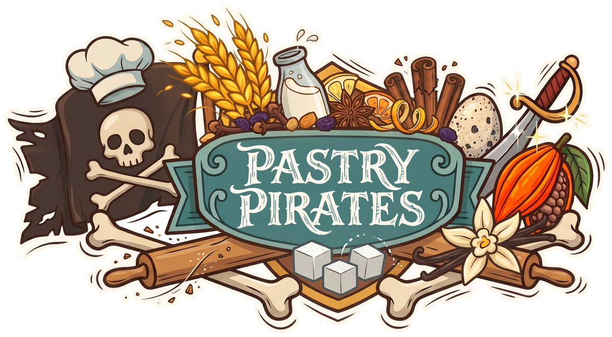

Pastry Pirates is a free browser pirate board game — sail a grid of islands, gather baking ingredients, trade and battle rival captains, and race home to become the Best Baker on the Sugar Seas. Play solo against AI captains, pass the wheel around one screen, or sail with friends online — no login, no download, 2 to 4 players.

Every captain starts with a secret recipe of five ingredients. Collect them all, sail home to the Isle of Tortuga, and declare victory — first baker home wins.
Each round the wind sets your sailing budget for the turn — cheap with it, dear against it. Once you've sailed, you take one action: dock at an island and flip a coin for a crate, attack a nearby ship for a shot at their cargo, parley a trade with any other captain, or fish for a quick coin. Storms roll in occasionally and shove every ship a few squares, so keep an eye on the sky.
Once you've gathered every ingredient on your map, race back to the Isle of Tortuga. If more than one captain makes it home the same round, it comes down to a head-to-head bake-off.
This is the short version, for deciding whether to set sail. The full rules — every detail of battles, trades, and storms — live in the game's own How to play screen once you're aboard.